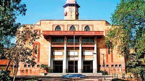
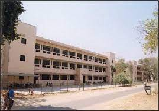

|
Nearest Metro Station: Paldi Address: Sargam Marg, Vastrapur, Ahmedabad, Gujarat 380015,india Distance From Nearest Metro Station: 5.00 km Description: Indian Institute Of Management Ahmedabad is a public business school located in Ahmedabad, Gujarat, India. Established in 1961, The institute offers post-graduate diploma programmes in Management and Agri-business management, a fellowship programme and number of executive training programmes. |
|  |
Nearest Metro Station: Usmanpura Address: Navrangpura, Ahmedabad, Gujarat 380009, India Distance From Nearest Metro Station: 3.50 km Description: The Gujarat University is a public state university located at Ahmedabad, Gujarat, India. The university is an affiliating university at the under-graduate level and a teaching university at the ghost graduate level. It is accredited B++ by NAAC. It was established in 23rd November 1949. |
|  |
Nearest Metro Station: Gujarat University Address: 120,Circular Road ,University Area, Ahmedabad-380015, Gujarat, India Distance From Nearest Metro Station: 1.00 km Description: Lalbhai Dalpatbhai College of Engineering (LDCE or LD), is a state college located in Ahmedabad, Gujarat, India. It was established in 1948 by Kasturbhai Lalbhai, and is named after his father Lalbhai Dalpatbhai. |
 |
Nearest Metro Station: null Address: Sarkhej-Gandhinagar Highway, Gota, Ahmedabad-382481, Gujarat, India Distance From Nearest Metro Station: 0.00 km Description: Nirma University (NU) is a multi-disciplinary university located in Ahmedabad, Gujarat, India. It functions under the aegis of the Nirma Education and Research Foundation (NERF). The Gujarat Government has granted "Centre of Excellence" status to Nirma University. |